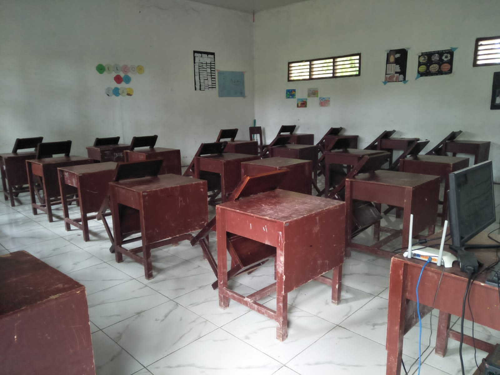
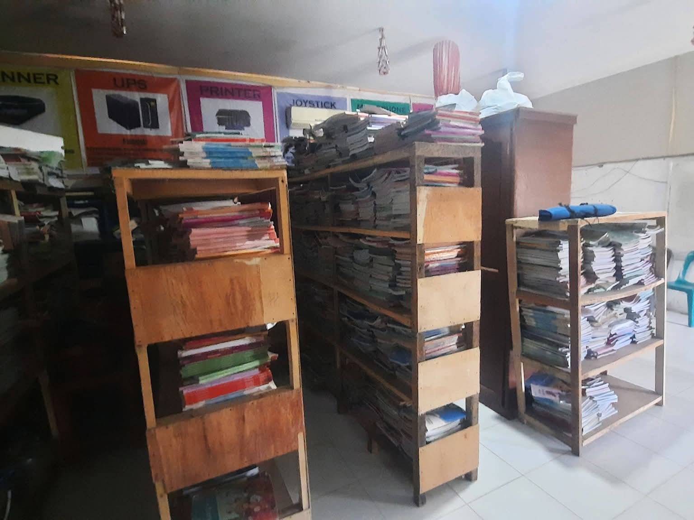
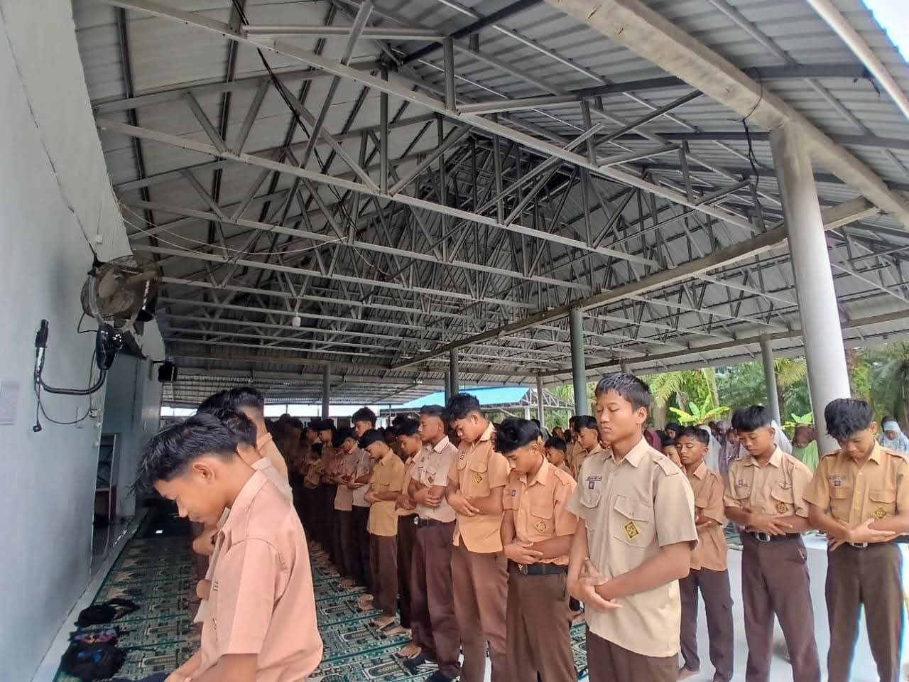
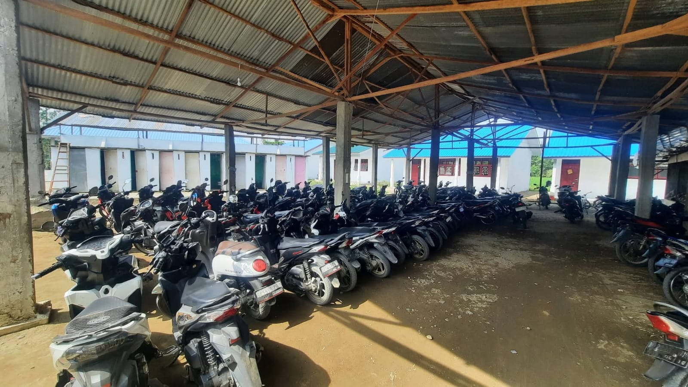
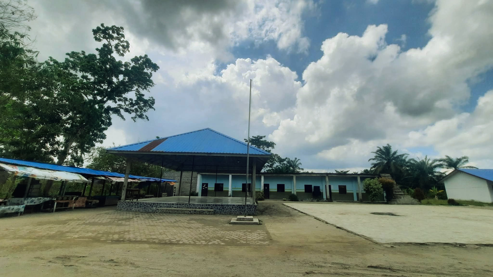
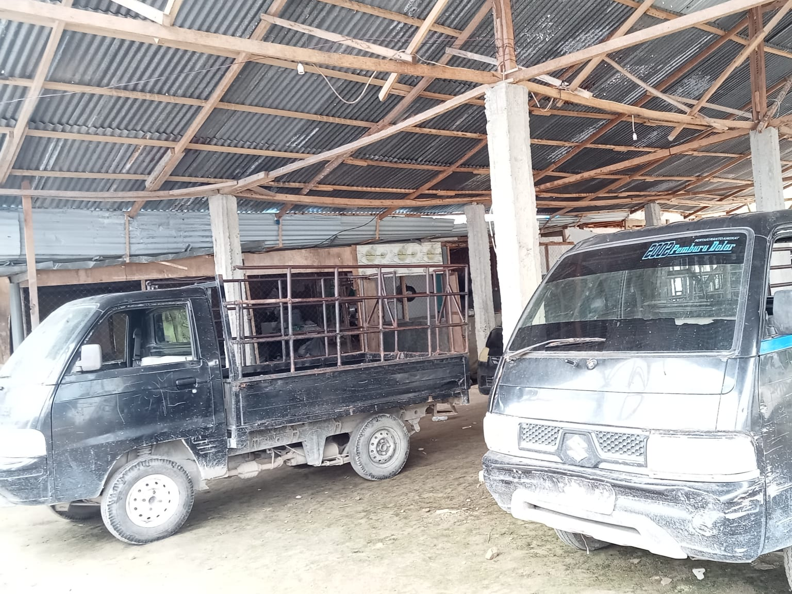

Fasilitas Smp Nusa Indah
Sekolah Nyaman,Siswa/i Berprestasi
1.Ruang Kelas

Ruang kelas yang nyaman,rapi,bersih,hati dan pikiran menjadi tenang untuk menuntut ilmu dengan semangat
2.Perpustakaan

Gerakan literasi sekolah dimulai dari perpustakaan yang sudah disediakan.
3.Mushola

Disela padatnya kegiatan belajar,Mushola ini disediakan untuk para guru,siswa/i,staf sekolah, menenangkan diri dan mendekatkan diri kepada Allah SWT.
4.Lapangan Upacara

Setiap helai Merah Putih yang naik,setiap suara Indonesia Raya yang menggema,semua bermula dari lapangan ini.Lapangan upcara ini menjadi tempat para siswa/i berdiri tegak,bicara lantang,& menepati janji sebagai pelajar pancasila.
5.Parkiran

Sekolah menyediakan area parkir yang luas dan terorganisir untuk menunjang keamanan & kenyamanan warga sekolah.
6.Pentas Seni

Disini ide menjadi aksi,dan bakat menjadi karya.Fasilitas pentas seni di Smp Nusa Indah hadir sebagai ruang berekspresi untuk seluruh siswa.
7.Lapangan Futsal

Sekolah menyediakan lapangan futsal standar untuk pembinaan fisik,mental,dan jiwa sportivitas siswa melalui olahraga.
8.Mobil Antar Jemput

Menjemput ilmu,Menjemput berkah,sekolah menyediakan mobil antar jemput untuk memudahkan para siswa/i yang tidak memiliki kendaraan tetap bisa bersekolah.
Sosmed

Alamat
Trans Blok M Desa Telaga Jernih,Kec.Secanggang,Kab.Langkat